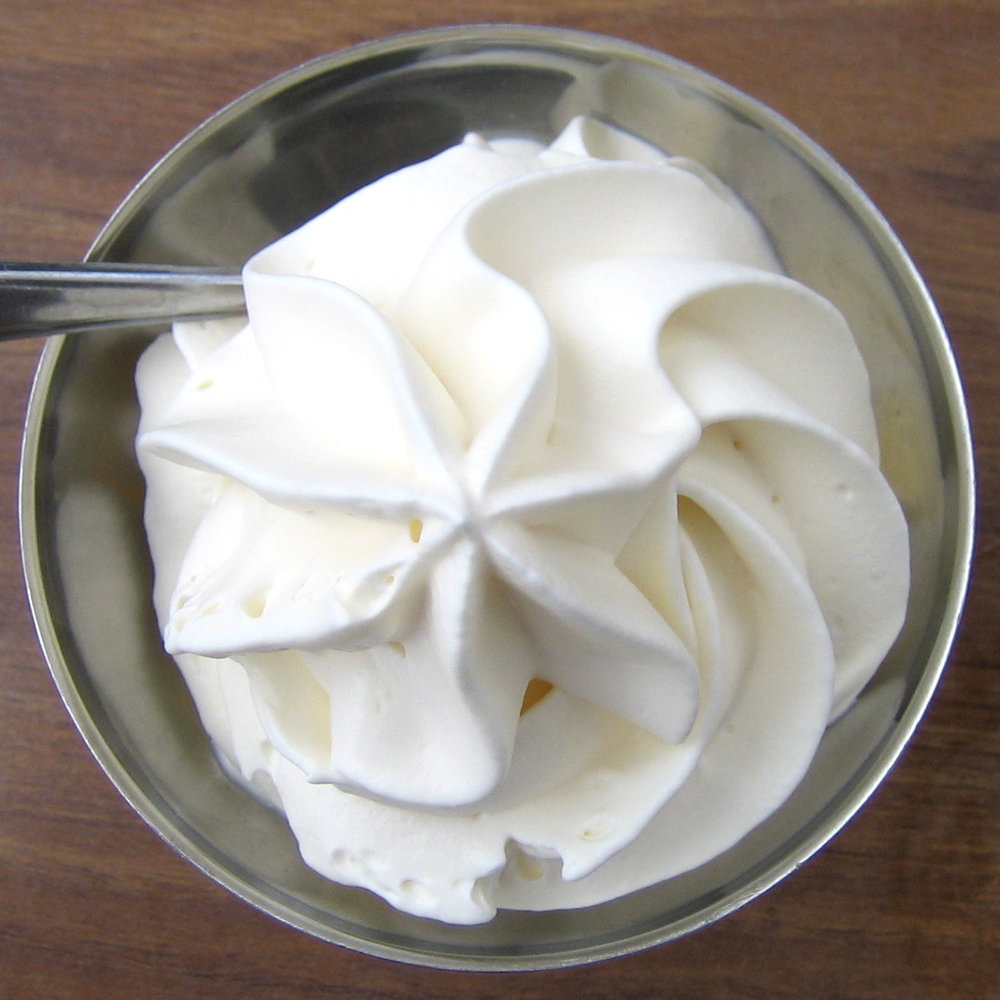

Yoghurt Chantilly

To Die For Yoghurt Chantilly
You can use this for desserts. Put it on everything!
Prep time: 5 minutes
Total time: 10 minutes
Yield: 20 small portions (soup spoons)
Ingredients
- 2 cups creme liquid
- ½ cup powdered sugar
- 2 cups yaourt Grec
Steps
- Put the cream and the powdered sugar into the mixer and whip until it
holds nice peaks.
- Add in the yaourt Grec and whip until combined.
- Pour into a short ⅓ bac and keep in the fridge. Don’t forget to date it.
- The yaourt chantilly will last quite a few days if it isn’t brought
in and out of the fridge.